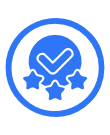
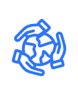

Certificados de Participação Social
Todos os voluntários que participam de nossos projetos recebem um
Certificado Digital de Participação Social,
reconhecendo oficialmente o tempo e o impacto dedicados às ações da organização.

Reconhecimento Oficial
Emitimos certificados digitais com registro institucional, validando sua contribuição social.
Impacto Social
Cada certificado representa seu esforço em projetos que transformam comunidades.

Valorização do Voluntário
Uma forma simbólica de celebrar sua dedicação, empatia e compromisso com o bem comum.
Participe e Receba o Seu